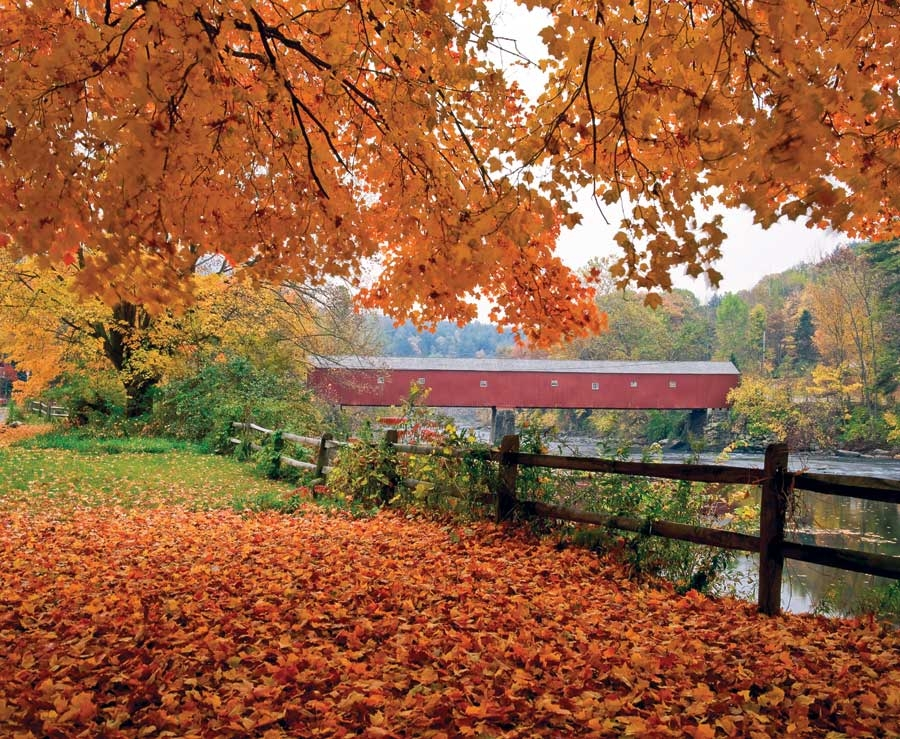

The modern settlement patterns and character of the rural Northeast tend to be influenced foremost by one factor: travel time to New York City. Virtually all of the towns in the region have coped with summer refugees from the city, with varying degrees of grace on both sides. In Cornwall, Conn., the two cultures - rural Yankee and city slicker - have blended with relative ease, in part because the town has been the summer retreat of progressive academics since the 1920s.
“In the 1930s when the farms were selling out, urbanites, and especially professors, bought these farms for a song,” says Tim Prentice, a local sculptor and architect. “They would relax in the summer months and work on their novels, and their kids could grow up in the country.” As a result, he says, “There are a lot of smart people in this tiny little town.” The town’s brain power is reflected in, among other things, the annual art show, which invites the works of 70 artists who live in the town of 1,500.
And while the dynamic of country-versus-city helps define the town’s character, Prentice says it’s a friendly relationship. “It’s not a big social place like the Hamptons. It’s not chic - people come up here to cool out,” he says.
For both locals and visitors, the natural beauty of the region is a point of pride. Once upon a time, the Housatonic River was best known for being the site of massive chemical contamination at a General Electric plant 50 miles upstream from Cornwall. Today the river is better known for its fly fishing - especially in the Cornwall area. This transformation took place in large part thanks to efforts by environmental activists and organizations such as the Housatonic Valley Association, which has a branch headquarters in Cornwall.
Opportunities for outdoor activities center around state parks such as Housatonic Meadows, which contains a section of the 2,000-mile Appalachian Trail, and Mohawk Mountain, which includes two state forests and a family-owned ski resort.
Some of the area’s small farmsteads remain viable, sustained by local food enthusiasts, the thriving Cornwall farmers market, and events such as the annual culinary celebration, “Food Glorious Food.”
Cornwall demonstrates an above-average commitment to renewable energy, billing itself “the Greenest Town in Connecticut.” Cornwall Consolidated Schools are powered in part by solar panels, for example.
Population: 1,434
Median Household Income: $54,886
Weather: A cool climate with summer temperatures typically in the 70s. Colder winters with an average snowfall of 42 inches.
What Makes It Great: A summer/retiree brain trust combined with a tradition of friendly egalitarianism.
|
 WILLIAM H. JOHNSON Rural New Englanders and urbanites combine in laid-back, friendly Cornwall, Conn. |
|
|